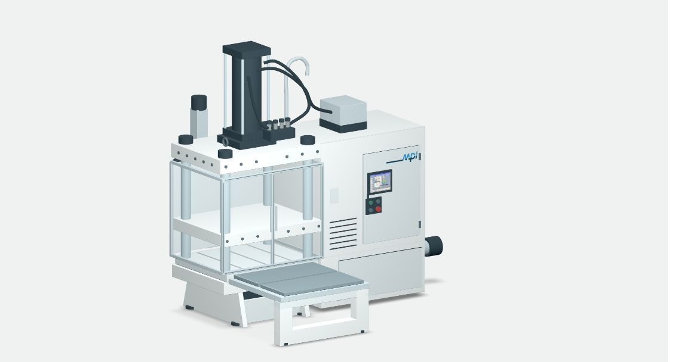

Interactive equipment example
MPI 35 Series
Illustrative 3D study
Not engineering CAD

Whole machineRecorded demonstrationGuided 3D · Prepared exampleInteractive equipment example
Illustrative 3D study
Not engineering CAD

Whole machineRecorded demonstrationGuided 3D · Prepared example